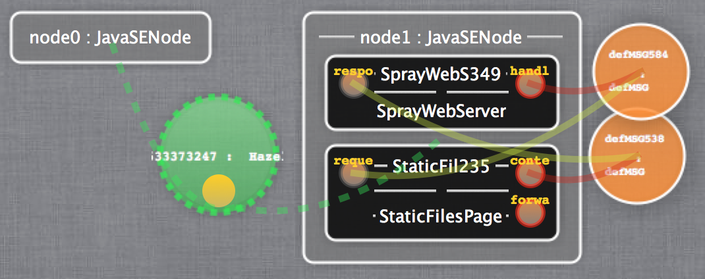
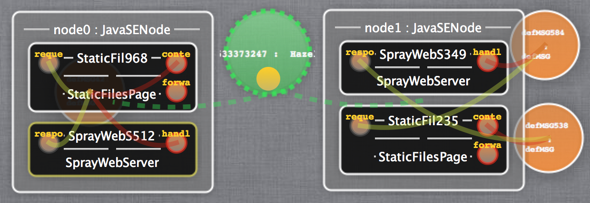
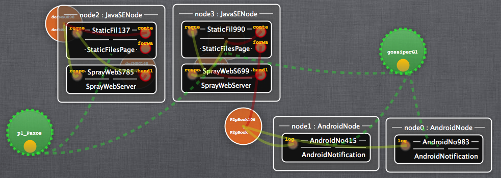
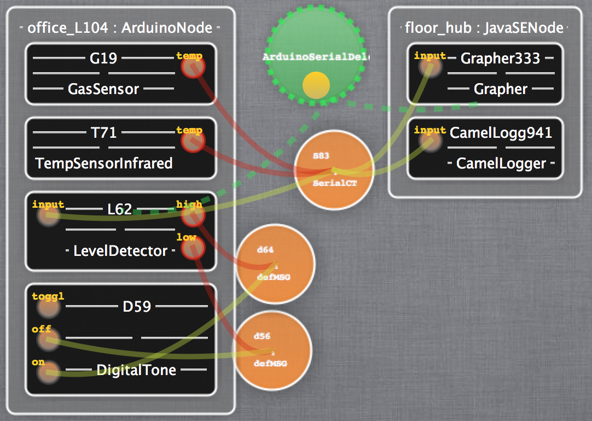

Kevoree : Model@Runtime
pour le développement continu de systèmes adaptatifs distribués hétérogènes
G
+
g
3
par François FOUQUET sous la Direction de Jean-Marc JEZEQUEL, Triskell Team, IRISA/INRIA Rennes
> DomaineProblème
État de l'art
Kevoree
Validation
Conclusion
Conception des grands systèmes
Système
Acquis : grand système logiciel
conception modulaire (Dijkstra'74 )
Modularité : division du système en sous-parties (par fonctionnalité)
Module
Système
assemblage de modules
Du cycle en V au déploiement continu
Système A
Système A'
Système A
Système A'
Cycle en V : granularité déploiement
Cycle continu : granularité de déploiement : modules Crnkovic'07
module
évolution sous-partie des modules
Systèmes Dynamiquement Adaptables (DAS)
Adaptation
Système A
Système A'
Calcul d'(auto-)adaptation nécessite un contexte d'état
Boucle d'adaptation M onitoring A nalyse P lanification E xécution (IBM'03 )
Pas uniquement pour système élitiste, un
Distribution : répartition des modules sur différents nœuds
Performance et montée en charge
Grappes de calcul, Cloud computing
, ...
Duplication et tolérance aux fautes
Besoins en distribution et hétérogénéité
Outre la puissance de calcul les nœuds ont des propriétés propres
Adapté au contexte physique
Informatique embarquée (consommation)
Capteurs
Domaine
> ProblèmeÉtat de l'art
Kevoree
Validation
Conclusion
Système adaptatif et distribué
boucle d'adaption
Adaptation distante
besoin de connaissances de l'état distant
Divergence de l'état capturé
Ajout composants à A et C
Nœud A : 3 modules3 modules
Si plusieurs nœuds capable de calculer les adaptations, alors
Divergence conflictuel de C et A en cas d'adaptations concurrentes
Ajout composant à B
Nœud A : 2 modules3 modules2 modules
Hétérogénéité de la divergence acceptée
Zone fixe : cohérence forte de la couche réflexion
Zone mobile : cohérence faible, indépendance des adaptations
Divergence imposée par le cas métier :
périodique , limitation
batterie
Problème de recherche
Modulaire déployable en continu
Adaptatif et réflexif (introspection et intercession )
Distribuable sur différentes ressources
Possédant des nœuds hétérogènes
Possédant des capacités de divergence hétérogènes
Domaine
Problème
> État de l'artKevoree
Validation
Conclusion
Concepts de programmation modulaire
Agents (
Fipa'97 ) : Sémantique réactif asynchrone, files d'attente
Modèle à composants (
Medvidovic'00 )
Ö
Ö
Ö
Manipulation et réflexion asynchrone : Model@Runtime (M@R)
Un modèle comme abstraction d'architecture à l'exécution (Morin'09 )
S
modèle
reflète
Modèle copiable et manipulable sans effet sur la plate-forme
S
Application (lien causal) à la demande , par comparaison de
modèles
S
Modèle cible (modifié), sauvé comme modèle courant
Modèle à composants réflexifs
Fractal, Frascati, OSGi, iPOJO, SAM, SOFA2, Rainbow
Modèle à agents systèmes distribués
La plupart des DDAS se fondent sur une adaptation centralisée
Peu ou pas de prise en compte de la divergence
M@R offre une reflexion asynchrone , applicable sur les
DDAS ?
Domaine
Problème
État de l'art
> KevoreeValidation
Conclusion
Kevoree : Concepts généraux
Abstraction pour
représenter et manipuler les DDAS
Metamodèle d'architecture pour un ensemble de nœudsModèle instance
état d'un DDAS
tous les nœuds
Modèle à composant étendu avec acteurs
Entités du modèle Modèle encapsulant conception et déploiement
D-M@R : lien causal local, vision globale
modèle courant (vue du nœud
0)
À réception, orchestration Model@Runtime
Différence de modèle sur la partie spécifique au nœud 0
(ajout module)
Après application des différences, lien causal local
assuré et sauvegarde
Réflexion distribuée orientée Modèle
possède une réplique de la pile Model@Runtime
Interaction réflexive (structurelle) uniquement au travers de modèles
Interaction locale (slide précédent)
Après modification, propagation d'adaptation via l'envoi
de modèles
Nœud responsable du lien causal
Patron de séparation Type/Instance
Objectif
TypeDefinition
Quoi , définit les fonctionnalités disponibles
HttpServeur
DeployUnit
Graphe de dépendance vers les briques techniques
Instance
Où , définit l'utilisation localisée d'une fonctionnalitéLien causal, déploiement d'un fragment logiciel
Server_4 : HttpServeur
Modèle de composant étendu
Expliciter la topologie des nœuds, composants et
communications
Nœuds : plate-forme d'adaptation et d'exécution
encapsule l'adaptation concrète
Composants : fonctionnalité métier
Communications via ports requis/fournis
Channels : sémantique de communication
encapsule les diffusions complexes (N-N)
RoundRobin, Broadcast
Extraire le problème de gestion d'accès concurrent aux entités
Composant
Sémantique d'acteur devant chaque port, groupe de port
Isolation des processus de chaque composant
Channel (proche des connecteurs)
Fragmenté sur chaque nœud
Sémantique d'acteur par fragment
Responsabilité de diffusion locale
modèle global
par nœud,
lien causal local
Synchronisation globale du DDAS
Se ramène donc à un problème d'algorithme distribué
Algorithme distribués pour répondre à la synchronisation de données
Algorithmes de consensus
Cohérence globale d'une donnée répliquée
Quorum majoritaire : algorithme de Paxos
Algorithmes épidémiques
Propagation virale, adaptée aux réseaux P2P
Ordre partiel : algorithme de type Gossip
Inondation de réseau
Cohérence à terme : garantie de convergence des répliques à
T+n
Résolution de conflits (ordre de résolution connu ou non)
Entité Groupe : explicitation du lien
de cohérence
encapsule les différents algorithmes de
synchronisation distribuée
Groupe : entité de synchronisation de M@R
Fragmenté sur chaque nœud abonné, communication inter-fragment
Intercepte le processus M@R local
Avant modification locale : ex PaxosAprès modification locale : ex Gossip, Rollback distribué,etc...
Slicing du M@R : synchronisation partielle
pour le passage à l'échelle
Indépendance des plates-formes
Comparaison de modèle produit adaptation abstraite
Indépendant de la plate-forme exemple : Ajouter composant, groupe fragment
Diff. de modèles
Nœud instance actions concrètes
Plate-forme dépendant ! exemple : Ajouter JAR, Instancier Objet Java
nœud instance
Nœud instance
Interprète d'adaptation spécifique locale
Plate-forme
Permet l'indépendance du M@R
vis-à-vis de la plate-forme
Exemple 1 : montée en charge de serveurs
Java (KCL, OSGi, Frascati)

Exemple 1 : montée en charge de serveurs
réplication
du serveur Web sur le nœud 0

Exemple 2 : intégration de nœud mobiles
Android
forte entre nœuds clusters, à terme entre nœuds
mobiles

Exemple 3 : smartBuilding
embarquées Arduino
hub d'étage

Kevoree face aux besoins des DDAS
Abstraction des concepts des DAS
Composants, Channels
modularité
TypeDefinition et arbre de dépendance
conception continue
Nouvelles entités dédiées au DDAS
Nœud abstrait
hétérogénéité
Model@Runtime
réflexion asynchrone
Groupe
synchronisation et réflexion distribuée
Domaine
Problème
État de l'art
Kevoree
> ValidationConclusion
Évaluation des réponses aux défis des DDAS
Évaluations aux cas limites des DDAS
Performances
combinaison nœuds fortement et faiblement contraints
évaluation de performance sur des nœuds embarqués
Gestion de la réflexivité divergente
évaluation de la cohérence à terme sur des nœuds sporadiques
Utilisabilité
Gestion de nœuds hétérogènes
Motivations
DDAS hétérogène
Nœud des réseaux de capteurs, IoT,
Validation par le pire cas
Problème et risque
Performance du M@R pour l'inclusion des nœuds IoT aux DDAS ?
Cas d'étude : SmartBuilding
Ensemble de capteurs de domotique et d'alerte (par étage/bureau)
Reconfigurations quotidiennes de confort et de sécurité, 6 fois par jour
Actionneur pour utilisateur : délai de perception ~200ms
Protocole expérimental : 500 adaptations
cycliques
Capteur embarqué sur processeur de type AVR-8 (328,2560)
Forte contrainte processeur 16 Mhz et mémoire 1-8kByte
Architecture exemple 3 , adaptation poussée depuis le nœud d'étage
Résultats expérimentaux sur µContrôleur
Mémoire
Temps d'adaptation
Pics : garbage collector
Temps moyen d'adaptation : 234ms
Valeur proche des 200 ms difficilement perceptible par un utilisateur
Surcoût du M@R : 15% de la mémoire, capacité de plus de 100 composants
Couche de réflexion pour DDAS sporadiques
Motivations
Cas d'usage : flotte de nœuds mobiles, connexions intermittentes
Décision d'adaption distribuée (concurrente), réseau pair-à-pair
Objectif : cohérence à terme de la couche réflexive
Problème et risque
Capacité de Kevoree à encapsuler un algortithme de propagation ?
Capacité de convergence et résolution de conflit de la couche réflexive ?
Groupe Gossip (DAIS'2012)
Solution évaluée : définition d'un
groupe Kevoree dédié
Lien causal inter-nœud faible, lien causal local fort
Propagation épidémique (Gossip ) des modèles
Utilisation d'horloge vectorielle pour détecter la divergence
Critères d'évaluations
Capacité des nœuds à faire des adaptations en cas d'isolation
Capacité des nœuds à résoudre un conflit après une isolation
Impact des fautes sur les adaptations
Injection de fautes aléatoires
o
Injection de modèle et mesure
Temps décroissant dû à l'isolation de nœuds
Convergence et résolution de conflits
Première propagation sur un réseau maillé sain
Injection d'erreur, isolation des réseaux
et adaptations
concurrentes
Rétablissement de la liaison, résolution et propagation du
modèle résolu
environ 20 personnes, Workshop Projet ITN RELATE
Prise en main des concepts et déploiement de DDAS inférieur à 2 h
Réalisation d'algorithme élastique (simple) inférieur à 3 h
Première implantation de groupes 3 h à 4 h
Kevoree : framework Open Source
Projet Kevoree : Framework OpenSource
initié en février 2010, ~300 KLOC (Java, Scala, C, Kotlin)
Implantation des opérateurs et algorithmes Model@Runtime
Outils de modélisation spécifiques @Runtime (MODELS'2012)
type définitions pour différents
types de nœuds
Java, Android, Arduino, Frascati, OSGi, Clouds...
ANR, FET, NOE, STREP ), 4 en montage
Application sur différents contextes
Projet DAUM : Système
d'information d'urgence
Domaine sapeurs-pompiers, fortement distribué et mobile
SmartHome : Laboratoire IoT
Luxembourg, Entimid
fortement dynamique, hétérogénéité des nœuds
KevoreeCloud (collaboration
avec E. Daubert)
Définition d'une hiérarchie des nœuds pour piloter les Clouds
Essai d'infrastructure dirigé par l'approche Model@Runtime
fortement dynamique, large échelle et distribué
Domaine
Problème
État de l'art
Kevoree
Validation
> Conclusion
L'abstraction architecturale en réponse à la complexité des DDAS
Model@Runtime distribué pour exploiter et expliciter la
divergence Inclure l'adaptation dynamique directement dans la conception
couvre de l'IoT au Cloud computing
Programmation orientée architecture (p. ex. définition d'élasticité)
Concrétisé sous forme de projet OpenSource collaboratif
Perspectives et travaux futurs
Optimisation continue d'architecture : élasticité pour le Cloud
Résolution multi-axiale orthogonale
Algorithmes génétiques
Apprentissage et traitement d'erreurs opportuniste (modèle dynamique)
Détecter les patrons d'élasticité et d'erreurs d'adaptation
Contremesures épidémiques, intégration d'hétérogénéité
DAIS'12 - Dissemination of reconfiguration policies on mesh networksF. Fouquet, E. Daubert, N. Plouzeau, O. Barais, J.
Bourcier, JM. Jezequel
CBSE'12 - A Dynamic Component Model for Cyber Physical SystemsF. Fouquet, O. Barais, N. Plouzeau, J-M. Jézéquel, B.
Morin and F. Fleurey
MODELS'12 - An Eclipse Modelling Framework Alternative to Meet the
Models@Runtime RequirementsF. Fouquet, G. Nain, B. Morin, E. Daubert, O. Barais, N.
Plouzeau and J-M. Jézéquel
ICSE'12 Workshop - A models@runtime framework for designing and managing
Service-Based Applications E. Daubert, F. Fouquet, O. Barais, G. Nain, G. Sunyé, J-M.
Jézéquel, J-L. Pazat and B. Morin
SEAA'10 - Integrating IoT and IoS with a Component-Based approachG. Nain, F. Fouquet, B. Morin, O. Barais, JM. Jézéquel
Kevoree est open source U , kevoree.org